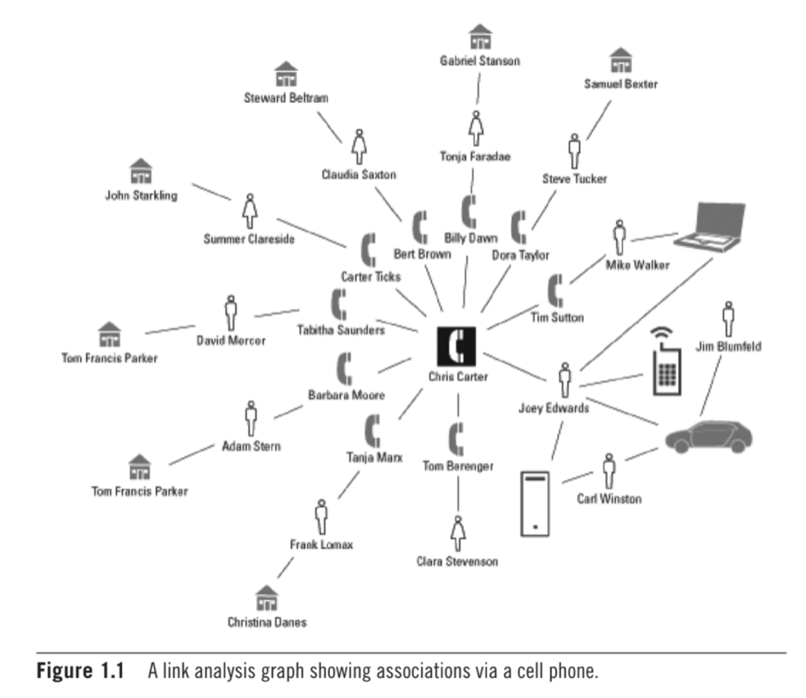

Features
Codes of Ethics and Professional Conduct
Review the application of the ethics code to the situation described and highlight the impact on any relevant legal (jurisdictional or non-jurisdictional) and social issues, as well as on the professionalism of the computing professionals involved. You should provide comparisons to the British Computer Society (BCS) Code of Conduct.
“Corazon is a medical technology startup that builds an implantable heart and health monitoring device” (ACM Ethics, 2018). The device functions so that you are able to monitor and record heart functions using a mobile app that is accessible by the patient and medical professionals. Corazon gained popularity and even begun offering their services for free to those who could not afford it.
Corazon implemented security mechanisms to ensure privacy, where all data on the app was encrypted. Nevertheless, a researcher found a vulnerability in the wireless connection between the device and mobile app. The researcher claims that is susceptible to data manipulation if another device is in close proximity. Unethically, the leaders of Corazon did not address the issue and wrote it off as negligible.
Hello Victoria,learn more
The BCS Code of Conduct ensures that IT professionals adhere to rules and regulations that are in the best interest of the public. According the BCS, you should “respect and value alternative viewpoints and seek, accept and offer honest criticisms to work” (BCS, 2023). Taking this into account, Corazon did not act in the best interest of their clients, and put their health at risk by claiming to possess the necessary security measures to secure patient data.
References
BCS The Chartered Institure for IT. 2021 The Code of Conduct.
ACM (n.d.) Code of Ethics: Case studies.
Peer Response
Thank you for your interesting and thoughtful post.
As you previously described, Corazón implemented a basic security mechanism meaning that the implant ‘could only be accessible through short-range wireless connections’ (ACM, 2021). This meant that the phone and implant had to be within close proximity, and any data transferred was encrypted. However, during a recent security conference, an independent researcher claimed to have found a vulnerability.
Throughout the case study, it appears that Corazón has acted ethically in alignment with the BCS code of conduct. For example, principle 1a (public interest), states that companies should “have due regard for public health, privacy, security and wellbeing of others…” (BCS, 2022) . Corazón’s implants are aimed at helping individuals with heart disorders and they also work alongside charities to provide “free or reduced access to patients living below the poverty line” (ACM, 2021). The company also had an open bug program, meaning that they were open to feedback regarding the security of the system. Although a vulnerability was found, it was decided that due to the limitations of the device, the risk of harm was negligible.
References
ACM, . (2021) Case: Medical implant risk analysis - ACM ethics, ACM Ethics - The Official Site of the Association for Computing Machinery's Committee on Professional Ethics. Available at: https://ethics.acm.org/code-of-ethics/using-the-code/case-medical-implant-risk-analysis/ (Accessed: February 13, 2023).
BCS, . (2022) Code of conduct - BCS, the Chartered Institute for it | BCS, BCS- Code of Conduct. Available at: https://www.bcs.org/media/2211/bcs-code-of-conduct.pdf (Accessed: February 13, 2023).
Ethics in Computing
Consider yourself as a relevant stakeholder, a Computing professional working for a company of your choice. Examine how one or more of the ethical issues mentioned affect your role in the company and what actions you would need to/can take.
Ethics in computing play a vital role. This is because ethics in computing helps companies adhere to the rules of law, whilst taking into account social, ethical or cultural issues. Computing professionals are obliged to protect their employees and clients, by making sure they have the necessary measures in place to protect any individuals privacy and overall well being. Technologies are constantly advancing and therefore they need to be monitored continuously in order to avoid potential risks. It is therefore essential that relevant stakeholders act professionally and with integrity. Taking this into account, stakeholders are able to provide sound advice whilst acting in the best interest of the public.
learn more
Law is understood as “a set of rules that can be enforced in a court” (Bott, 2018). Although different countries have different laws, there are certain standards and ethical considerations that can be appleid no matter your geographical location. For instance, when we refer to law in the computing industry, we focus on an individuals right to privacy and the protection of their data.
Facebook, is a technology company that is used globally. Facebook has faced numerous ethical issues. For instance, in 2018 during Trump’s Campaign, millions of Facebook users data was accessed and used unethically. The data was used to build voter profiles. “The Times reported that in 2014 contractors and employees of Cambridge Analytica, eager to sell psychological profiles of American voters to political campaigns, acquired the private Facebook data of tens of millions of users — the largest known leak in Facebook history” (Confessore, 2018). This was unethical as Facebook had not gotten their users consent.
Thus, stakeholders at a company like Facebook should be committed to act morally when dealing with data. Going forward, Facebook stakeholders need to ensure that their privacy practices are made transparent. Altogether, companies need to ensure that stakeholders have a clear understanding about the social and ethical consequences of using certain technologies. This can be implemented by sending computing professionals on compulsory training programs to further their understanding and awareness. Along with, conducting regulatory security checks to make sure there are no data breaches. In conclusion, it is evident that the importance of ethics in computing is essential in modern society as technology is embedded in our every day lives, where people’s private data is constantly at risk of being exposed and used unethically.
References
Bott, F. (2014) Professional Issues in Information Technology. London:BCS.
Confessore, N. (2018) Cambridge Analytica and Facebook: The scandal and the fallout so far, The
New York Times. The New York Times. Available at: https://www.nytimes.com/2018/04/04/us/
politics/cambridge-analytica-scandal-fallout.html (Accessed: February 11, 2023).
Stahl, B., Timmermans, J. & Mittelstadt, B. (2016) The Ethics of Computing. ACM Computing Surveys 48(4):1-38. DOI: 10.1145/2871196
Literature review outline
Implementing Machine Learning tools and/or techniques in: suspect profiling
Suspect profiling is understood as the practice of identifying alleged preparators associated with criminal activity. Criminal profilers rely on numerous techniques to pinpoint offenders. For instance, law enforcement recognise machine learning tools and extensive data analysis as a “reliable standard of evidence-based profiling” (UCF online, 2022). Overall, machine learning tools help detect patterns and behaviours of suspected individuals through data collection (Wired, 2018).
The pros and cons of machine learning in suspect profiling
learn more
There is a enormous amount of criminal records, which when sifted through manually to identify repeat offenders, takes up a mass amount of time. Machine learning tools are an effective way and less time consuming way to process data to generate predictions, whilst avoid human manual errors (Munasinghe and Perara, 2015). On top of this, machine learning tools can be used advantageously for crimes that are under investigation, by using algorithms and applying them to datasets to create a profile based on gender, race, age, education and so on. The following machine learning tools, “Logistic Regression, Support Vector Machines, Neural Networks, Bayesian Networks and several Classifier Ensembles” will be investigated in this paper (Mariani, 2020).
Machine learning techniques are also subject to error based on missing data, which can result in unreliable predictions. Unfortunately, data can also be weaponised against minority groups. For instance, previous unjust arrests can result in discriminatorily monitoring, gaining control over individuals and/or social groups. Thus, biased data fosters human prejudice. Additionally, there is a lack of transparency involving certain predictive tools, people question its role in the criminal justice system (Heaven, 2020).
Research Methods
In this paper, I will make use of the following academic quantitative research methods:
Descriptive research
Correlational research
Causal-comparative/quasiexperimental research
Experimental research
Additionally, I will conduct qualitative research by conducting an interview. I will be interviewing the owner of an AI firm based in Johannesburg, South Africa to get his insight into machine learning and suspect profiling.
Hypothesis
Automated computer-assisted technology can benefit and assist data management when profiling a suspected individual. Ultimately, AI tools have potential to explain complex crimes associated with a suspect.
References
Heaven, W.D. (2020) Predictive policing algorithms are racist. they need to be dismantled., MIT Technology Review. MIT Technology Review. Available at: https://www.technologyreview.com/2020/07/17/1005396/predictive-policing-algorithms-racist-dismantled-machine-learning-bias-criminal-justice/ (Accessed:February 19, 2023).
J. ICOVE, D. (no date) Automated crime profiling . Available at:https://web.eecs.utk.edu/~icove/CrimeProfiling.pdf (Accessed: February 19, 2023).
M. Mariani , S. (2020) Profiling serial killers using multiple supervised machine learning. Available at: https://studenttheses.uu.nl/bitstream/handle/20.500.12932/37006/eindscriptie_SimonMariani.pdf?sequence=1 (Accessed: February 20, 2023).
Rudin, C. and Sloan, M.I.T. (2015) Predictive policing: Using machine learning to detect patterns of crime, Wired. Conde Nast. Available at: https://www.wired.com/insights/2013/08/predictive-policing-using-machine-learning-to-detect-patterns-of-crime/ (Accessed: February 20, 2023).
What is criminal profiling and it's role in law enforcement? (2022) UCF Online. Available at: https://www.ucf.edu/online/criminal-justice/news/what-is-criminal-profiling and-what-is-its-role-in-law-enforcement/ (Accessed: February 19, 2023).
Seminar 3 Case Study
Ricardo works for the records department of his local government as a computer records clerk, where he has access to files of property tax records. For a scientific study, a researcher, Beth, has been granted access to the numerical portion “but not the corresponding names” of some records. Beth finds some information that she would like to use, but she needs the names and addresses corresponding with certain properties. Beth asks Ricardo to retrieve these names and addresses, so she can contact these people for more information and for permission to do further study. Now consider, what are the ethical issues involved in deciding which of these options to pursue?
learn more
If Ricardo is not responsible for determining allowable access, should he release the names and addresses?
No, Ricardo should not be able to release the names and addresses as he does not have sign off from his suepriors or the authority to do so. Ricardo will be required to adhere to his companies policies. I would suggest that Ricardo logs a request to gain access to the above mentioned data, and gain consent before proceeding. Additionally, it should be reviewed as to why Beth needs access to this information and whether or not it holds relevance and will be valuable towards her research.
Suppose Ricardo were responsible for determining allowable access to the files. What ethical issues would be involved in his deciding whether to grant access to Beth?
Ricardo would need to ensure that Beth uses the data in an ethical manner and gains consent from the indiivduals to participate in the study. She would then need to make sure that the information granted to her is secure and safe and cannot be accessed or used for anything beyond the scientific study. Furthermore, she would need to provide evidence of their consent, such as a verbal recording or have it in writing.
Should Beth be allowed to contact the individuals involved? That is, should the Records department release individuals' names to a researcher? What are the ethical issues for the Records department to consider?
I suggest that Richardo contact the individuals first to provide their consent before Beth, who does not work for the records department. If the individuals contacted provide their consent, then Beth should be allowed to contact them.
Suppose Beth contacts the individuals to ask their permission, and one-third of them respond giving permission, one-third respond denying permission, and one-third do not respond. Beth claims that at least one-half of the individuals are needed to make a valid study. What options are available to Beth?
Beth will not be able to continue with her research, as she has not obtained consent from at least half of the individuals. It is important that the records company adheres to the rules of law, where data cannot be obtained by a third party without the consent of individuals. Otherwise, this will be viewed as a data leak. Additionally, all data should be destroyed or masked when the research study is complete. Overall, all data needs to be dealt with an ethical manner.
Reflective activity
In 2018, Cambridge Analytica was in the news in the United Kingdom and the USA (Confessore, 2018) for obtaining and sharing data obtained from millions of Facebook users. They obtained the data through innocuous surveys on Facebook (you may have seen this type of survey and probably participated at times). This is probably the highest profile of surveys used for alternative means and, probably, monetary gains. However, this happens often through various media. Consider how exactly this happened and why it was used. Find one or two further examples of inappropriate use of surveys and highlight the impact of all these examples from the various ethical, social, legal and professional standpoints that apply.
learn more
Surveys are viewed as an effective tool for gathering data and gaining insight. Nevertheless, people’s data should also be dealt with in an ethical way where certain rules and regulations should be implemented. Additionally, it is essential that certain security measures are put in place to ensure that personal data is kept confidential and only accessible by authorised parties.
"The Times reported that in 2014 contractors and employees of Cambridge Analytica, eager to sell psychological profiles of American voters to political campaigns, acquired the private Facebook data of tens of millions of users — the largest known leak in Facebook history" (Confessore, 2018). This was done by collecting an individual’s personal data by getting individuals to fill out a survey. People did so and were under the illusion that this was a personality test and was not to identify them as targets for political gain. This is an example of the unethical use of technology to gain data with malicious intent.
New Statesmen Media Group, sent out a survey to “senior marketers, business leaders and publishers” has been identified as an unethical use of research methods (Drayton and Mel, 2022). These surveys required respondents to choose between alternative campaign tactics. The company also collaborated with influencers to gain attention from their followers. They then deployed tactics such as greenwashing, where they would falsely brand their company as environmentally friendly because they found that is what consumers wanted based on survey feedback.
When conducting a survey for research purposes, certain security measures need to be adopted, such as encrypting data collected and only giving access to authorised parties. This can be implemented by complying and adhering to the General Data Protection Regulation (GDPR). If they fail to do so, they will be held accountable in the eyes of the law and will be prosecuted accordingly.
Overall, it is vital that individuals are aware of the personal information they are willing to expose online. A company needs to be transparent about how they plan on obtaining and individuals data and what exactly it will be used for. All the above, should be highlighted and explained clearly in the companies terms and conditions.
References
Confessore, N. (2018) Cambridge Analytica and Facebook: The scandal and the fallout so far, The New York Times. The New York Times. Available at: https://www.nytimes.com/2018/04/04/us/politics/cambridge-analytica-scandal-fallout.html (Accessed: February 11, 2023).
Phillip, Drayton and Mel (2022) Worst examples of unethical marketing revealed in new survey, Global Marketing Alliance. Available at: https://www.the-gma.com/worst-examples-of-unethical-marketing-revealed-in-new-survey (Accessed: March 16, 2023).
Wiki Activity: Questionnaires
Find a questionnaire and critique the design, both the format and the questions used. Consider areas such as ‘why is this question included?’, ‘is the form of the question appropriate?’ etc. How can you improve the questionnaire?
learn more
Based on the analysis of the above questionnaire. The following issues have been identified:
A leading question is identified where a question is asked about where you source most or all your information. The answers only include that of public sources and provide limited options. For instance, it excludes things such as books or by word of mouth. It is evident that the researcher has a preferred response.
An assumptive question has been identified. The researcher is immediately assuming that the child grew up with parents. Additionally, that the parents are either a man or a women.
Am ambiguous question is identified, where the researcher uses the term “single- family density,” which is a real estate term. Thus, the language used in this question will not be understood by all respondents resulting in confusion and inaccurate answers.
The last question is pushy, by using the word “useful” in every answer. The question is also ambiguous as it refers to teachers and other professionals. The respondent cannot accurately respond to this question without understanding what other professionals the researcher is referring to.
Finally, the layout of the questionnaire is also confusing, where the spacing is different in between questions and there is numbering for one question and not others.
Statisitcal worksheets
learn more
Worksheet 8.1B
Worksheet 8.2B
Worksheet 8.3D
Worksheet 8.4G
Worksheet 8.6C
Worksheet 9.1D
Worksheet 9.2D
Worksheet 9.3B
Literature Review
Implementing Machine Learning tools and/or techniques in: suspect profiling
Introduction Suspect profiling is understood as the practice of identifying alleged preparators associated with criminal activity. Criminal profilers rely on numerous techniques to pinpoint offenders. Law enforcement recognises machine learning tools and extensive data analysis as a “reliable standard of evidence-based profiling” (UCF online, 2022). Machine learning tools aid law enforcement by detecting patterns and behaviours through data collection (Wired, 2018). Ultimately this leads to faster and more efficient suspect profiling.
learn more
History of criminal profiling
Suspect profiling can be dated by to the 19th century, where law enforcement used psychological methods to apprehend serial killers. During that time, investigators had access to limited resources and therefore information uncovered about a suspect was often unreliable (UCF Online, 2022). Overtime, suspect profiling has advanced significantly. For instance, an FBI agent, John Edward Douglas developed a profiling method that is still used today. “Douglas was able to research the psychopathologies and behavioural abnormalities of serious criminals, beginning the process of identifying patterns and correlating behaviours” (UCF online, 2022).
Modern technology and databases are largely responsible for the improvements in forensic science. These advancements can be attributed to technologies, such Violent Criminal Apprehension Program (ViCAP). ViCAP gathers data and identifies correlations related to violent, unlawful behaviour (UCF online, 2022). Recognising patterns of behaviour is important as it helps formulate theories, establish probable cause and predict future offenses.
Machine learning forensics explained
Machine learning forensics has derived from artificial intelligence, where computers systems are able to complete tasks that require human-like intelligence. This is implemented through “pattern recognition software that analyses vast amounts of data to predict some behaviour, which in the case of forensics is criminal intent and activity” (Mena, 2011). In order to leverage behavioural analytics, machine learning relies on historical data and current risk activity. For instance, “the outputs of most machine learning programs are conditional IF/THEN rules” (Mena, 2011). As an example,

Both inductive and deductive approaches are used when gathering and analysing data in machine learning for suspect profiling. Inductive reasoning identifies patterns and then makes generalisations using methods, such as link analysis. Link analysis involves the use of communication channels to uncover connections between different people and consequently reveal “who knew whom, where and when” (Mena, 2011). For instance, social media data sets assist in the creation of a suspect profiles by using algorithms to discover an individual’s interests and personality. Results of link analysis are displayed in the form of a graph where there are links (edges) and circles (nodes) which represent the individual being investigated. The thickness of the line linking the different individuals, indicates the strength of their association (Mena, 2011).

On the other hand, deductive reasoning involves predicting criminal behaviour based on a set of data, such as a suspect’s digital trail to deduce facts we know to be true.
A model is established to investigate behavioural data in order to anticipate a suspect taking part in unlawful acts. This can be done by “drilling down data using such algorithms as classification and regression trees” (Mena, 2011). Regression trees can be embedded into law enforcement systems and provide a graphical demonstration of IF/THEN rules. Certain rules are put in place to classify data into groups and subgroups. For instance, a police officer involved in corrupt activities could suffer from substance abuse, which is a characteristic associated with a specific group of people. Thus, an individual’s motivations and psychology are important when linking them to a particular crime.
Furthermore, there is an additional nature of profiling, where the individual’s characteristics are found but the person is still unknown. In this situation, an investigator needs to search the database to identify an individual who matches the profile (Miller, 2019).
The importance of database access
Law enforcement machine learning resources allow police to make inferences according to specific criteria. It is known that “high volume crimes, such as theft are more amenable to profiling” than more violent, less common crimes, such as murder because of access to larger data sets (Miller, 2019). Additionally, it is easier to identify suspects that are repeat offenders as specific data is already held regarding previous crimes. Thus, database access and integration across numerous jurisdictions greatly supports profiling.
Advantages of machine learning in suspect profiling
There is a enormous amount of criminal records, which when sifted through manually to identify repeat offenders, takes up a mass amount of time and are hard for the human mind to discern. Machine learning tools provide an effective, accurate, less time consuming process to analyse data to generate predictions (Munasinghe and Perara, 2015). Additionally, machine learning tools have no personal nature or feelings towards an investigation and are therefore not subject to personal bias.
Ultimately, machine learning tools can be used advantageously for crimes that are under investigation, by using algorithms and applying them to datasets to create a profile based on gender, race, age, education and so forth. For instance, text mining can be viewed as a preventative machine learning tool to protect a system or the general public from being compromised.
Text mining involves the extraction of desired keywords from large amounts of content. After extraction, machine learning tools are aware of how the keywords relate to one another and can analyse results and identify emerging trends (Goyal, Gupta etc., 2020). As an example, the famous Unabomber case made use of forensic linguistics to catch the perpetrator. The Unabomber would plant explosive devices at his desired location and send letters to the FBI. The perpetrator was known for not leaving any form of physical trace at the bomb site. Nevertheless, he was eventually caught through the analysis of his writing style. “The FBI used a simple computational method looking at word frequencies, spelling variants and the like to build up a linguistic profile” (Luu, 2017). Thus, they were able to match the authors of the letters to the perpetrators letter’s to his family, along with other written documents.
Disadvantages of machine learning in suspect profiling
Machine learning in forensic science raise ethical and legal concerns, because they are subject to error. For instance:
Missing data can result in unreliable predictions.
Machine learning algorithms only draw conclusions based on the data it has access to. Taking this into account, there could be bias towards a particular demographic, which could lead to discrimination. This data can then be harvested and be weaponised against minority groups. For instance, previous unjust arrests can result in discriminatorily monitoring individuals. This allows law enforcement to gain control over potentially innocent individuals and/or social groups. Thus, it can be said that biased data fosters human prejudice.
There is a lack of transparency involving certain predictive tools and therefore people question its role in the criminal justice system (Heaven, 2020).
Investigators must not only rely on technology, as results can be misinterpreted.
Overall, personal data monitoring should only be used when an individual has been legitimately flagged as a suspect in the eyes of the law. Thus, an individual has the right to question profile deductions if they believe they have been unjustly targeted. Additionally, the development and deployment of associated algorithms should be made transparent so that they can be subject to regular monitoring and be audited by authorities. Finally, it must be recognised that machine learning tools have limitations and must not be used independently of other law enforcement profiling tactics.
Cybercrime and automated profiling
It is important to note that suspect profiling is not limited to physical crimes. Cybercrime is highly prevalent in today’s society. Cybercrime can be understood as any fraudulent act within an online environment (Goyal, Gupta etc., 2020). For example, a denial of service attack or the deployment of a virus. Machine learning identifies a cluster of traits uniquely associated with an individual and crime incidences. For instance, a payment system’s data could be broken down until the algorithm is able to determine the primary characteristics and behaviours of a group involved in fraudulent transactions, which may include sex, employer, address, transactional history, and other social factors. Altogether, cybercrime highlights vulnerabilities within a system that make them susceptible to an attack.
For instance, classification and clustering algorithms can be used to identify geographical hotspots that can be plotted out onto a map. Attributes associated with a particular group of individuals, could reveal that crimes such as money laundering are occurring primarily in a particular region (Custers, 2021). Consequently, law enforcement agents can focus on hotspots making crime detection more efficient.
Conclusion
In conclusion, automated computer-assisted technology can benefit and assist data management in law enforcement agencies. Thus, data is recognised as “evidence for machine learning forensics” (Mena, 2011). Evidently, AI tools effectively provide efficient profiles of suspects associated with complex crimes. Nevertheless, machine learning algorithms raise concerns about potential biases, privacy invasion and inaccurate profile creation because they are heavily automated. To address these issues, robust ethical and legal frameworks need to be executed to guide machine learning practices. Overall, it is essential that both machine learning and human judgement are used in conjunction when profiling a potential suspect.
References
Custers, B. (2022) Profiling and predictions: Challenges in cybercrime research datafication, SSRN. Leiden University, Leiden, Netherland. Available at: https://deliverypdf.ssrn.com/delivery.php?ID=444091009006086002026089123089092092096081003083049054069100126078089007120024086081107026040056062060105068024107095093031115012043009087045068077026064121092026093023050042112123091127007006084085127124124121010071084014026075026003006120088031084009&EXT=pdf&INDEX=TRUE (Accessed: March 10, 2023).
Heaven, W.D. (2020) Predictive policing algorithms are racist. they need to be dismantled., MIT Technology Review. MIT Technology Review. Available at: https://www.technologyreview.com/2020/07/17/1005396/predictive-policing-algorithms-racist-dismantled-machine-learning-bias-criminal-justice/ (Accessed:February 19, 2023).
J. ICOVE, D. (no date) Automated crime profiling . Available at:https://web.eecs.utk.edu/~icove/CrimeProfiling.pdf (Accessed: February 19, 2023).
M. Mariani , S. (2020) Profiling serial killers using multiple supervised machine learning. Available at: https://studenttheses.uu.nl/bitstream/handle/20.500.12932/37006/eindscriptie_SimonMariani.pdf?sequence=1 (Accessed: February 20, 2023).
Mena, J. (2011) Machine learning forensics for law enforcement, security intelligence, Google books. Google. Available at: https://books.google.co.uk/books?hl=en (Accessed: March 10, 2023).
Miller, S. (2019) Machine Learning, Ethics and Law, ACS Digital Library. AustralasianJournalofInformationSystems. Available at: https://journal.acs.org.au/index.php/ajis/article/view/1893/851 (Accessed: March 10, 2023).
Rudin, C. and Sloan, M.I.T. (2015) Predictive policing: Using machine learning to detect patterns of crime, Wired. Conde Nast. Available at: https://www.wired.com/insights/2013/08/predictive-policing-using-machine-learning-to-detect-patterns-of-crime/ (Accessed: February 20, 2023).
What is criminal profiling and it's role in law enforcement? (2022) UCF Online. Available at: https://www.ucf.edu/online/criminal-justice/news/what-is-criminal-profiling and-what-is-its-role-in-law-enforcement/ (Accessed: February 19, 2023).
Research Proposal Presentation
Transcript: The effectiveness of machine learning techniques in suspect profiling
Introduction
The significance of machine learning in suspect profiling
Criminal investigations rely on machine learning techniques to identify suspects. This is done by analysing data and using pattern recognition software to predict behaviours related to criminal activity (Wired, 2018). It is evident that machine learning techniques can successfully create a profile of an individual (age, gender etc) and pinpoint a culprit that matches the description. Ultimately, it is an efficient tool for solving or preventing complex crimes.
learn more
Access to large data sets: Machine learning tools rely on large data sets to organise data into groups, analyse it and reveal behavioural analytics. In criminology, there are numerous data sources, such as witness statements or descriptions explaining a crime scene. The human mind has limitations, where it is difficult to consume and discern the enormous amount of data associated with criminal records. Taking this into account, artificially intelligent machines can process information much faster and more efficiently. Thus, machine learning provides a reliable and less time consuming method for generating predictions about perpetrators. (Munasinghe and Perara, 2015).
Pattern detection: Machine learning tools execute algorithms that are able to extract information and interpret it in order to identify patterns in behaviour. For instance, text mining is a linguistic machine learning tool used to uncover patterns in keywords. Linguistic forensics allows law enforcement to generate a profile of a potential perpetrator by analysing the words they use to communicate.
Make predictions: Even though many criminal activities appear as unpredictable in nature, they can be foreseen using machine learning tools. Crime forecasting is vital as it can save lives by predicting dangerous criminal behaviour, such as terrorist attacks (Shah, Bhagat, 2021).
Prevent new or repeat offenders: Criminals usually have a motive, which can be identified by monitoring suspicious activity. For instance, machine learning tools allows governing parties access to data sets that can analyse social media engagement by using algorithms to discover who the culprit engages with, their interests and personality (Mena, 2011).
Automated learning: “Machine learning is an application that provides a system with the ability to learn and improve automatically from past experiences without being explicitly programmed.” (Shah, Bhagat, 2021) Basically, the computer algorithm can make inferences based on what it has learnt from the data it has access to.
Absence of human bias: Machine learning tools have no personal nature or feelings towards a particular crime nor the individual committing it. Human beings may be influenced by their own judgements, which can result in discrimination and unreliable predictions. On the other hand, machines are not subject to personal bias, they hold huge significance when profiling a suspect.
Research questions
What are the most efficient and accurate machine learning techniques in suspect profiling?
How accurate are predicted suspect characteristics in relation to actual suspect characteristics?
How much time does it take to complete the machine learning profiling process?
How accessible and user friendly are machine learning tools used for suspect profiling?
What are the ethical and legal implications of using a machine learning approach?
Are machine learning tools more productive than traditional suspect profiling methods?
Aims and objectives
It is important we identify the most successful algorithms used for suspect profiling as we want to test and make use of the best performing machine learning tools, as they will provide the most reliable results.
We want to be able to prove the significance of machine learning when profiling suspects, and how they can provide more accurate results as machines that are not subject to human error.
We need to ensure that machine learning tools are used ethically and do not contribute towards discrimination. This is often a consequence of biased or the interpretation of incorrect data , which produces inaccurate results.
It is essential that machine learning tools adhere to the rule of law. For instance, it should be transparent about how they work and who they are allowed to monitor in the eyes of the law, whilst protecting an individual’s privacy.
Ultimately, we want to identify the most effective machine learning tools that accurately profile a suspect.
Research methodology
Correlational research is used to identify the relationship between different variables without manipulating them. For instance, machine learning tools can be used to identify connections and the strength of association between different people.
Causal-comparative research explores the cause and effect relationship between variables (Williams, 2007). This is an essential research methodology, as it helps us identify if certain variables, such as gender have an effect on criminal activity.
True experimental research provides a systemic approach to quantitative data collection and relies on statistical feedback. This is will either prove or disprove the effectiveness of machine learning for suspect profiling. For instance, the control group can be a group of investigators who conduct research to expose a suspect, versus machine learning tools. The results can then be compared. We will then be able to determine if the machine learning tools produce accurate results in comparison to traditional methods.
Observational research involves “observing a particular aspect of human behaviour with as much objectivity as possible and records the data” (Williams, 2007). Overall, machine learning algorithms analyse human activity and draw conclusions about an individual’s characteristics.
Ethical considerations and risk assessment
People have the right to privacy in the eyes of the law. Therefore, it is important to ensure that machine learning tools do not unjustly monitor anyone activity by unlawfully gaining access to their personal data. Therefore, the surveillance of an individual is only justified if they are suspected of having criminal intent.
Machine learning tools can make mistakes and produce inaccurate results if the data sets they have access to are unreliable. This can ultimately lead to falsely accusing an innocent individual or an entire group of people. This can happen if there are bias’s within the actual data. For instance, a minority group may be targeted because there is more data associated with them. This is a form of discrimination, where machine learning algorithms influence unjust arrests.
Consequently, it is essential that the results produced by machine learning tools are not assumed to be correct without human intervention. Human judgement and machine learning tools must be used in conjunction with an apprehended suspect. Altogether, crime enforcement agencies need to act ethically and be held accountable when profiling a suspect.
Description of artefacts
The following artefacts will be used to validate the effectiveness of using machine learning algorithms when profiling a suspect:
A link analysis diagram is a visual representation of data points and the connections between them. Link analysis diagrams can be used to connect a suspected individual to a crime based on the strength of their association with those around them.
A decision tree is a tree like structure, which displays the decisions someone makes and their outcome. This can be used to classify individuals into certain categories based on the choices they make. Additionally, decision trees can also be used to solve regression problems by providing “predictive analytics to forecast outputs from unseen data” (Klaise, 2021). The regression approach is a supervised machine learning algorithm, where the model is trained to understand the relationship between independent variables and output data.
Support vector machines (SVM) are used to predict the probability of repeat offenders. The aim of this approach is to obtain insight about offender behaviour based on historical datasets. This is done by classifying data and separating it into positive and negative instances using hyperplanes. Hyperplanes operate within a decision boundary to help organise data. In terms of law enforcement, support vector machines could be used to decipher who, when and why criminals will return to jail (Wang etc., 2010).
A Bayesian network model is used to analyse data and make probable inferences about criminal behaviour. This can be explained by examining the probability of different outcomes associated with nodes (data points). For instance, “the evidence obtained from the crime scene of a new case is inserted in the trained BN model and, through the inference engine, the offender psycho-behavioural profile is produced” (Baumgartner, Ferrari, Palermo, 2008). Overall, the combination of different models can provide the most accurate predictions.
Agile approach
An agile methodology will be used to manage this project. This is an efficient approach when working with machine learning technology. This is because it focuses on one phase at a time before moving onto the next, which prevents the team from making mistakes. I have broken up the project plan into the following sprints:
Sprint 1 (2 weeks): Answer research questions and collect data
Sprint 2 (2 weeks): Data analysis
Sprint 3 (4 weeks): Model/ artefact development
Sprint 4 (2 weeks): Testing
Sprint 5 (2 weeks): Model alterations
Sprint 6 (2 weeks): Deployment
Conclusion
Identifying suspects and predicting criminal activity are vital in criminology. The use of machine learning tools for suspect profiling needs to be explored extensively to validate its effectiveness. In conclusion, the project aims to assist law enforcement agencies by providing them with the most effective machine learning tools, which produce the most accurate results when profiling a suspect.
References
Baumgartner, K., Ferrari, S. and Palermo, G. (2008) “Constructing Bayesian networks for criminal profiling from limited data,” Knowledge-Based Systems, 21(7), pp. 563–572. Available at: https://doi.org/10.1016/j.knosys.2008.03.019.
Cervone, H.F. (2011), "Understanding agile project management methods using Scrum", OCLC Systems & Services: International digital library perspectives, Vol. 27 No. 1, pp. 18-22. https://doi.org/10.1108/10650751111106528
Heaven, W.D. (2020) Predictive policing algorithms are racist. they need to be dismantled., MIT Technology Review. MIT Technology Review. Available at: https://www.technologyreview.com/2020/07/17/1005396/predictive-policing-algorithms-racist-dismantled-machine-learning-bias-criminal-justice/ (Accessed:February 19, 2023).
Klaise, J. (2023) Decision trees in machine learning explained, Seldon. Available at: https://www.seldon.io/decision-trees-in-machine-learning (Accessed: April 1, 2023).
Mena, J. (2011) Machine learning forensics for law enforcement, security intelligence, Google books. Google. Available at: https://books.google.co.uk/books?hl=en (Accessed: March 10, 2023).
Mena, J. (2011) Machine learning forensics for law enforcement, security intelligence, Google books. Google. Available at: https://books.google.co.uk/books?hl=en (Accessed: March 10, 2023).
Rudin, C. and Sloan, M.I.T. (2015) Predictive policing: Using machine learning to detect patterns of crime, Wired. Conde Nast. Available at: https://www.wired.com/insights/2013/08/predictive-policing-using-machine-learning-to-detect-patterns-of-crime/ (Accessed: February 20, 2023).
Shah, N., Bhagat, N. & Shah, M. Crime forecasting: a machine learning and computer vision approach to crime prediction and prevention. Vis. Comput. Ind. Biomed. Art 4, 9 (2021). https://doi.org/10.1186/s42492-021-00075-z
Shi, Shao-Chong & Chen, Peng & Yuan, Peng-Hui & Hou, Chao & Ming, Hong-Xia. (2018). The Prediction of Offender Identity Using Decision-Making Tree Algorithm. 405-409. 10.1109/ICMLC.2018.8527045.
Wang, Ping & Mathieu, Rick & Ke, Jie & Cai, H.. (2010). Predicting Criminal Recidivism with Support Vector Machine. 2010 International Conference on Management and Service Science, MASS 2010. 10.1109/ICMSS.2010.5575352.
What is link analysis? (2022) Cambridge Intelligence. Available at: https://cambridge-intelligence.com/why-link-analysis/#:~:text=Link%20analysis%2C%20sometimes%20called%20'graph,represent%20the%20connections%20between%20them. (Accessed: April 1, 2023).
Williams, C. (2007) Research methdos, View of research methods. Available at: https://clutejournals.com/index.php/JBER/article/view/2532/2578 (Accessed: April 1, 2023).
Module Reflection
Research Methods and Professional Practice
learn more
Unit 1
In unit 1, we were educated on the importance of research. Research is essential when trying to better understand a certain topic or solve a problem. The scientific method is a research tool used to objectively extract and uncover information by conducting tests. In order to either prove or disprove a hypothesis, the scientific method adopts a step by step process. The process involves observation, creating a hypothesis, generating predictions, following out a test or experiment and then analysing the results. Furthermore, we explored both inductive and deductive reasoning. Both these approaches are useful when gathering and analysing data. Deductive reasoning involves drawing specific conclusions based on that which is already known. On the other hand, inductive reasoning involves observation, where we can draw a general conclusion. Additionally, we explored the importance of acting ethically when conducting research in a professional environment. We learnt that the key ethical principles (respect, beneficence, justice, respect for law and public interest) need to be taken into account when carrying out research.
Unit 2
In this unit I choose my research topic, Implementing Machine Learning tools and/or techniques in: suspect profiling. I choose the following topic because I have always been interested in machine learning and its capabilities. On top of this, I majored in psychology at university and am intrigued by the human mind. Thus, I thought it would be interesting to investigating how a machine can generate predictions related to the human mind, such as a persons personality traits when profiling a suspect.
Furthermore, we were educated on how to formulate a literature review. A literature review is when you analyse and identify reliable literature. We learnt how to formulate research questions and write a research proposal. In doing so, these questions helped define the scope, limitations, methodology and areas that need focus in relation to the research topic.
Unit 3
This unit focused on research design and the different methods that can be used when collecting data. Research design comprises of generating a plan/outline that will be used when researching a particular topic. Taking this into account, I was able to predict that the following academic quantitative research methods were appropriate for my chosen topic:
Descriptive research
Correlational research
Causal-comparative/quasiexperimental research
Experimental research
Unit 4
In this unit, we explored the different research methods that could be implemented in the field of computer science. For instance, case studies comprise of collecting data from a particular group or individuals in order to explain phenomenon. Seeing that case studies could be subject to bias or influenced by other factors, it is important to use them in conjunction with other research methods. Focus groups are qualitative in nature and are essentially a discussion about a particular phenomenon amongst a chosen group of people. During such discussions, the moderator learns about the group members thoughts and opinions, which are subjective, which may lead to inaccurate results. When observing a sample, such as a group of people, observational methods can either be quantitative (height, gender) or qualitative(characteristics). Observational methods could be unethical if marginalised groups are being examined or may be viewed as an invasion of privacy.
Unit 5 and 6
We explored the use of surveys and interviews as a form of research. There are numerous ethical considerations that need to be taking into account when conducting interviews and surveys, primarily, consent. Additionally, the data collected needs to be protected, unbiased and secure. I was shocked to discover how Facebook, a globally used platform could be subject to such unethical practices when assisting Trumps campaign to gain a political advantage. I therefore believe it is essential to disclose and be transparent when conducting either an interview or survey.
Pre and post testing methods can be implemented to ensure the researcher acts ethically. For instance, pre interview questions can help establish consent and make the participant feel more in control. Additionally, the researcher can explain the purpose of the interview or survey to ensure the participant understands what they are agreeing to. Post interview questions can be used to help clarify or better understand the participants responses. On the other hand, questionnaires are subject to error. In unit 6, we explored different types of questions and how to identify them. For instance, assumptive questions can include questions that assume certain characteristics about a participant.
Unit 7
I unfortunately did not take part in the second discussion forum in unit 7, due to poor time management and overwhelming work demands from my job. I hope to be more organised and avoid this in the future.
Unit 8 and 9
In this unit we were introduced to statistical inference, where we would need to draw conclusions based on the data that is under investigation. I found all statistical exercises quite challenging as I am not that familiar with excel. However, after additional research I was able complete all the exercises and this was a great learning experience.
Unit 10-12
In this unit, I submitted my research proposal presentation. The research proposal helped refine whether or not machine learning algorithms are an effective tool when profiling suspects. Overall, the research proposal helped plan and create a structure as to how the research project would be implemented. I recommend an agile approach when it comes to managing the research project, where tasks are broken up into sprints.
This is vital as it helps define tasks, manage timelines, highlight limitations and ensure the project is conducted in an ethical manner. Based on the feedback I received, I need to include my citations in the presentation itself and not just the transcript. I also need to avoid being too descriptive and instead engage in a more academic discussion.
Altogether, I have found this module to be incredibly informative. It highlighted the importance of conducting research in an ethical manner, whilst making use of different types of research methods to effectively and efficiently solve a problem or acquire reliable knowledge on a particular topic.